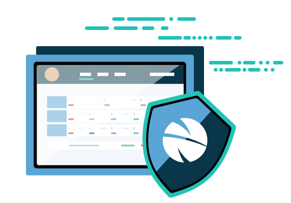
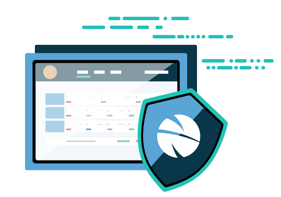

Table of Contents
- The History: Started From The Finovate
- My Role
- The Research Phase
- Project Goals
- Challenges and Solutions
- The UX Impact
- Landing Page
- Two More Challenges
- Launch and Learn
Table of Contents
Product Design, Front-end Development
9 min read

The B2B portal is an online payments platform, aiming to help businesses pay and get paid easier, make the payment process more transparent and secure.
In Feb 2017 and April 2017, nanopay showcased the B2B platform with integrations with invoicing software Freshbooks and Xero.
Because of the tight deadline for the Finovate demo, we took a dirty approach: A brainstorming workshop with the product and development team for a minimum viable product.

After the demo, we decided to rethink the B2B portal as we have more time. I worked closely with the customer success manager in the research phase, and with the product & development team in the ideation and testing phase. I was responsible for the interaction & visual design of the B2B portal, as well as the design & front-end development of the B2B landing page.
The plan looks like:
| Plan | Objective | Deliverables |
|---|---|---|
| Interviews with potential users | Understand customer's pain points and needs, discover the opportunity | Notes, Persona, Design brainstorming |
| Competitors analysis | Know how the competitors are doing and reflect on our product | Competitive analysis report, Feature matrix map |
| Interviews with stakeholders | Understand the business requirements and expectation, decide the final requirements meeting both user and business goals | Business requirement documents, Value proposition list, UI requirements |
Based on the interviews with potential users, we created two personas.
The design needs to reflect both user needs and the business goals. Based on the user research, I summarized the project goals as below.
Based on research, we came up with 3 solutions to help users solve the pain points with multiple design iterations and validations.
B2B payment lives in a complex context, the volume, people involved and the payment lifecycle made it so different from the P2P and B2C payments.

In order to make the payment process more smooth, we incorporated the basic invoicing capability into the system. Users can create a simple invoice, send or receive one from partners in the nanopay ecosystem.
We explored two directions of creating an invoice:
We decided to go with NO.2 as our main focus is on the payment, so the invoicing ability should be very basic to minimize cost. Also, the attachment offered a way to share all the other details.
The following are some important questions we asked ourselves.
What we’ve offered is a limited invoicing capability, for users relying on accounting software, we designed the sync between the B2B portal and the software.
With the sync:
| Method | Modal | New Page |
|---|---|---|
| Benefits |
|
|
| Drawbacks |
|
|
| Development Cost | Low | High (many actions) |
After careful considerations and talking with developers, we decided to go with modals if the steps are less than three. As most actions are one step: confirm/add optional comments - Click action button, creating a new page will be too much cost. For steps more than two, wizard view.
This was a critical challenge for me, and I have learned that:
"You know, once the payment starts to process, we have no control. Who knows what happened in that 5 business days..."
"Well, I only care when we will get paid."
"If we could, just share everything with the partner and the members"
A history section for both vendor and customer to view history, track status changes and share comments.
We decided to go with B & C as the history can go pretty long with many edits and comments, and also taking the fact that the invoice details always take up a fixed amount of space and the latest status is the most important.
In critiquing those iterations, we thought about two questions:
The most important task for an accountant or the small business owner is, to never miss a deadline for payment, but try to make the funds remain in the company's account as long as possible. Remembering the key dates is a challenge and people keep sticky notes everywhere to remind themselves. Also, when paying an invoice, the time it costs to arrive has to be taken into consideration.
Users can know what they need to do for the coming week. They can also schedule a payment easily to keep them away from the penalty.
I led the research and design process in the B2B project. It's great to see that my efforts have had an impact on how the teams work together, and greatly grown up the UX influence in a fintech startup.
As the design team of one, I work hard to connect myself and proactively communicate with the rest of the team. Besides presenting design deliverables in our weekly Learn & Share, I also set up design sessions to educate teammates about design-thinking and user-centered design, and involve developers in brainstorming and hands-on drawing workshops.I have a post about my experience in a workshop I have done for this project.

Gladly, the team started to provide feedback instead of just following the requirements. People started to think, reflect, and look at things in the perspective of users. These are all valuable input to help me get rid of my biases and ego, design in a more inclusive perspective, and make wiser design decisions.
I was responsible for designing and developing the landing page for the B2B portal.
Similar to designing the landing page of the retail portal, we took the same approach and highlighted the 3 solutions we made to transform B2B payments.

I created illustrations using the B2B mockup elements and animate them to deliver a delightful experience.

 

This is my first front-end development project. As a beginner, I spent lots of time learning HTML5 and CSS to make the site responsive; I also used JavaScript to program the image picker, allowing users to view different images using tabs in web and dropdown in mobile.
By doing actual front-end development myself, I got a deeper empathy with developers. I got to know some buzzwords like box-model and specificity, understand how positioning works in CSS, etc. In this way, I was able to design with both user needs and a developer mind.

Besides the design problem, there were two other major challenges in the design journey: the nanopay rebranding and the change of technology strategy - migrate all the services to the same server.
The fresh and new nanopay branding required me to reinvent the visual experience of B2B platform.
In the middle of the project, the development team decided to hook all the nanopay services to one platform with access control by user group, instead of building different portals, to achieve higher performance.
The change of the technology direction challenged me on the scalability and compatibility of my design, as all the services will share the same design structure, similar user flow and experience, with the same look and feel. However, this is also an excellent opportunity, which led to my latest project - nanopay Design System: Accelerating Design and Development.
In Dec 2017, nanopay launched B2B portal in a private beta-testing with invited partners. One really important lesson we learned is the security and compliance in the payment industry.
As designers, we've always been taught to make the design as simple, easy to use as possible. However, that is not always the case. I have wondered many times why we have to ask users for "extra information" in the onboarding process, but that is to protect everyone's money and security from fraud.
Payment is a serious thing. In our case, it might be just a few hundred dollars, but for business, it can be a multi-billion transaction. We should always really think about the context of the industry, instead of over-simplifying the process. Security and privacy should never be sacrificed for the ease of use.